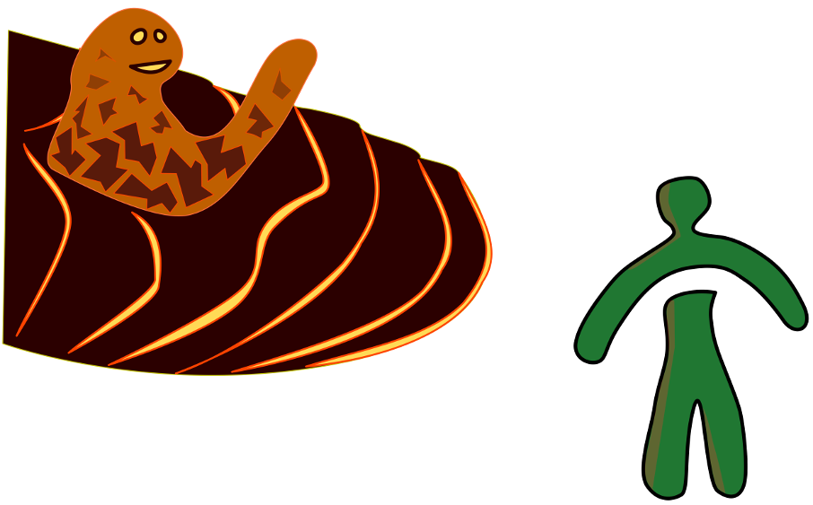
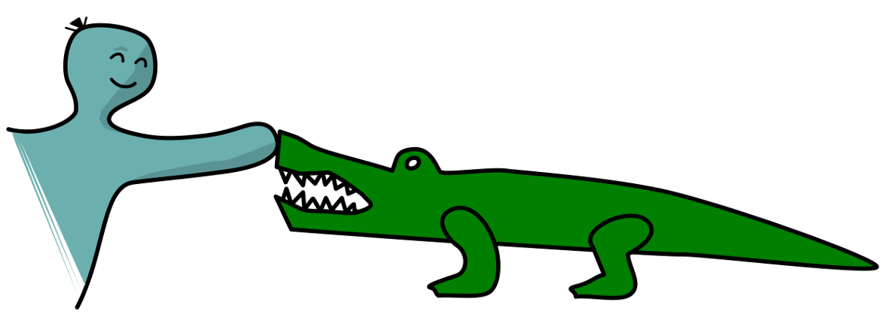
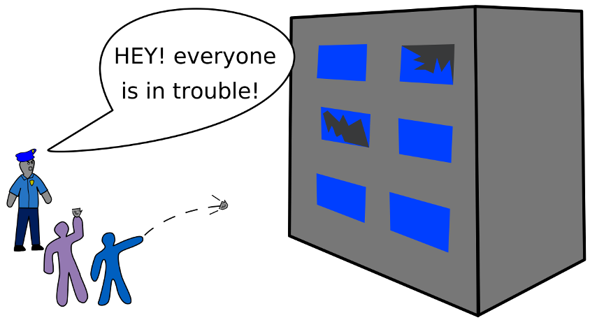

Sometimes, to make progress, you need to use a bunch of different ways. But, trying to remember why some ways are good in the first place could slow you down. To do the most good, you might have to forget why you do things in a particular way. Sometimes, forgetting can cause difficulties too.
✔
Eating Food
...status?
Good
✔
Sharing toys
...status?
Good
✘
Sharing toys
...status?
Bad
✘
Swimming in hot lava
...status?
Bad
✔
Swimming in hot lava if you’re a lava monster
...status?
Good

This lava monster thinks it's good to swim in hot lava and invites a Learner to join him. The Learner knows it's only good if you are a Lava Monster.
Thinking about what's good and bad, and right and wrong is really hard for most people. It can be really hard to work out which action is best in the right setting. Usually, people let someone else do the thinking for them if they are unable to handle it.
Different kinds of checkboxes:
Type of Checkbox
Who Uses It
I have tried every different way possible and found this one to have the best outcome.
I have tried every different way I could think of and found this to have the best outcome.
Self Guider, Wise Leader, Learner
I put a great deal of thought into this and considered lots of options and chose this way.
Self Guider, Wise Leader, Learner, Worker
I put a little thought into this way, and I saw lots of other people doing it, and I’m sure at least one of them figured out if it’s good and can explain why.
Learner, Worker, Pretending Person, Misguided Person
After playing around with this, I completely understand how it works, and now I can use it. I can re-explain it instantly if I need to.
After playing around with this, I understand how this works, and now I can use it. I do not need to remember how I came to understand how it works. I’m sure I could figure it out again if I need to.
Wise Leader, Learner, Worker, Pretending Person
Someone whom I trust as an Everything Knower chose this way. It must be good.
Wise Leader, Learner, Worker, Pretending Person, Misguided Person
Someone whom I trust as a Self Guider chose this way. It must be good.
Wise Leader, Learner, Worker, Pretending Person, Misguided Person
Someone whom I trust as a Wise Leader chose this way, and after trying it myself, I also found it to be good.
Wise Leader, Learner, Worker
I had a nice moment with a friend doing things this way, so it must be good.
Learner, Worker, Pretending Person, Misguided Person
Doing things this way makes me feel good, and doesn't harm anyone. I usually like things that are good, so this must be good too.
Learner, Worker, Pretending Person, Misguided Person
Doing things this way makes me feel good, but it harms others. That’s always OK.
Misguided Person, Bad Guy
If you can’t remember why you decided to checkbox a certain way, at least try to remember what type of checkbox it was. If you want to improve yourself, you can go back and think it through again. If someone you looked up to wasn’t who you thought they were, then you know you might want to rethink the ways they have given you.
In this world, our current way is “hold children and people who aren’t in charge responsible for what they do.'' Therefore, if someone leads a child to do something, the leader will usually not be responsible at all.
If you had a nice moment doing things a certain way with a friend, and then you do it by yourself, and it turns out to be not a good action, then your friend won’t be held responsible. Examples: hurting people younger than you, making fun of someone who needs help, petting ferocious alligators.

The Learner remembers last time he and his friend had a nice time petting ferocious alligators together. Doing it now must be good too, right?
If you saw lots of other people doing something a certain way, and it turns out to be a bad action, then you will still be held responsible for your actions. Examples: breaking something that someone worked hard on, calling someone a name they don’t like.
If someone you trusted does something in a way that turns out to be bad, they will not be responsible if you do it. Examples: If you see your parents yell at everyone who tries to help them (like waiters or car mechanics), or you see your boss hitting people who are disobedient, and you repeat any of these actions in situations of your own, then you will be held responsible.

An older Learner convinces a young Learner to throw rocks at a building. The young Learner realizes we live in a world where it's everyone’s fault if something turns out to be bad, even though most young Learners are born wanting to do things with other people.
Also, in this world, our current way (and the way of Workers, Pretending People, Misguided People, and some Learners) is “it is OK for grownups to not hold themselves responsible for some ways that they treat kids.”
If they treat you in a way that is taken from someone they trust as a Self Guider, they will not feel responsible for anything bad that happens because of it. Example: if a teacher or principal tells your parent to do something to you that hurts more than it helps, your parent will not feel responsible if it’s discovered that the action hurt you.
If they treat you in a way that they have put little thought into, and have seen lots of other people treating kids like that, they will not feel responsible if it’s actually bad. Example: If every parent has their children play at certain times of the day, instead of when the child wants to, your parents will not feel responsible if it causes some harm.
Different people have different ideas about how to get you to rethink your ways:
An Everything Knower might not ask you to rethink your way, they might just tell you to do things a different way.
If a Self Guider asks you to rethink your way, you know that they certainly thought really hard and have some experience doing things that way, and found it to be bad. They will probably tell you a story of how they discovered this.
Wise Leaders rarely ask you to rethink your way – they do not know enough about you or anything else to be able to do that. They might ask you to rethink your way if yours is dangerous. If you gave their way a try, they would be very interested to know if it worked or not.
If a Learner asks you to rethink your way, you can give it a try and let them know. They will hopefully want to take turns rethinking things if you ask them to.
If a Worker asks you to rethink your way, it may be because they do not know what to say, and they are uncomfortable with silence, so they have just said that. You can give it some thought, but not too much. Definitely don’t give it more than twice as much thought as they give your own ways.
A Pretending Person would ask you to rethink your way like an Everything Knower. Be careful! They probably don’t actually know that much. They will not be willing to rethink theirs if you ask them. They think that their checkbox of “It helps me feel good, and doesn't harm anyone, and I usually like things that are good, so it must be good,” is better than everyone else's. They think other people should put a lot of time into rethinking their ways, but never do the same themselves. If you try their way and report back that it did not work for the best, they might not believe you. For some Pretending People, there is almost nothing you can do to convince them that their way is not the best for making a good thriving environment.
In this age on Earth, if there was a rule that said, ”Everyone who decides to be a leader who isn’t accountable for all their actions (a Self Guider) has to go to jail,“ then every parent, boss, teacher, and president would have to go to jail! That rule might be a good idea if there were several Self Guiders in the world, but not right now.
Unless someone is pretending to be a Self Guider, try not to get too mad at them if they use a way but don’t know why. Since there are no known Self Guiders, probably everybody does it sometimes – perhaps even including you, and that’s OK. They can improve on their own, hopefully.